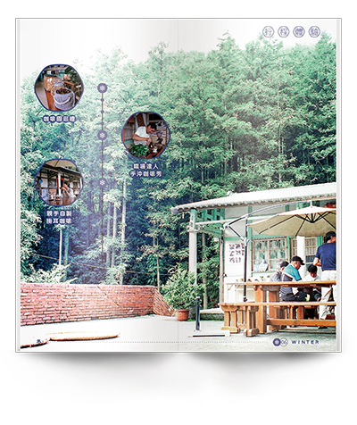
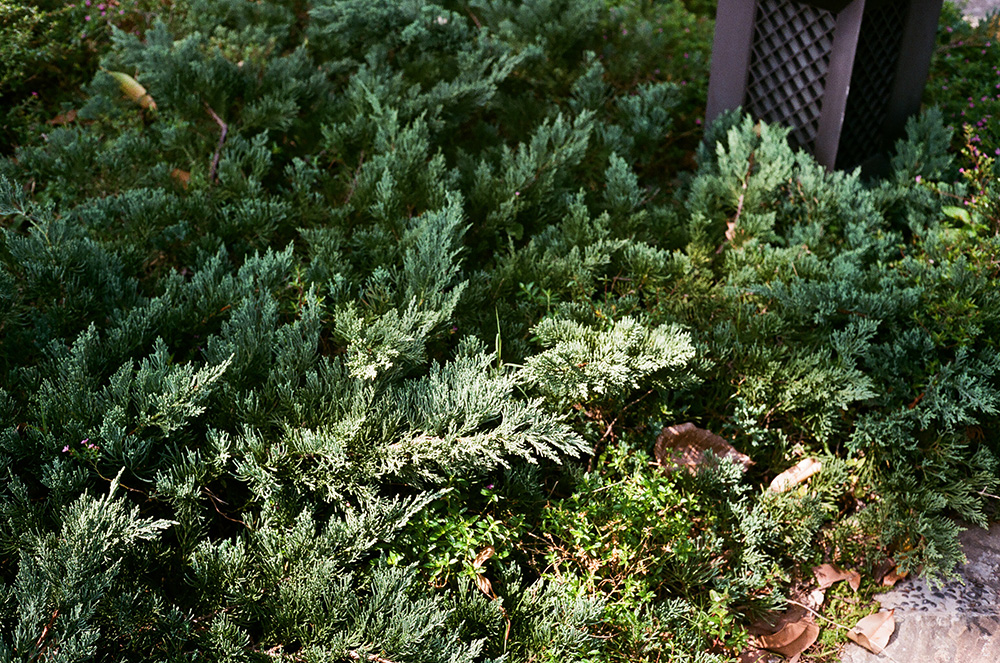
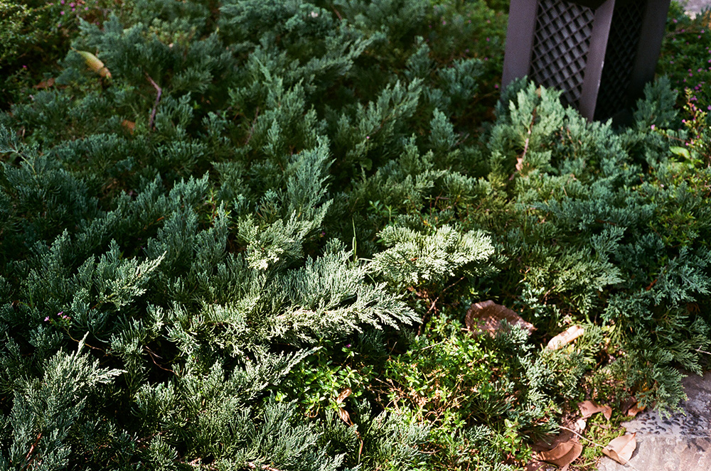
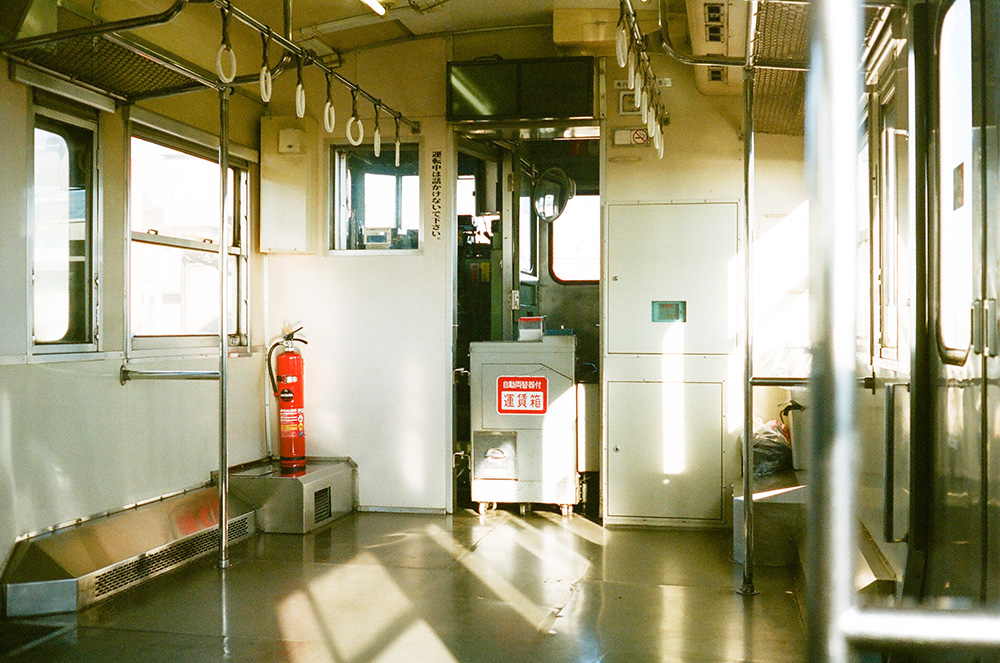
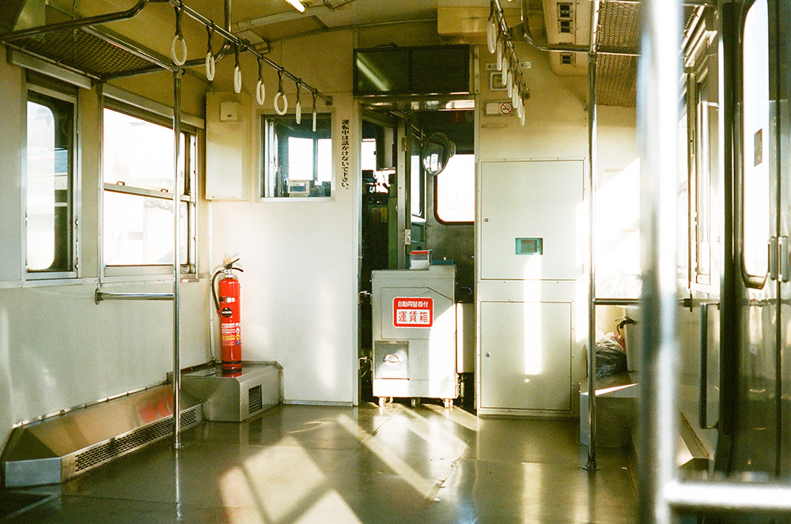

About Me
設計可以讓生活變得更美好
為什麼想從平面設計轉職到網頁前端設計？
在經歷了四年的平面設計工作的過程中，深深感受到設計師的無力感，
設計師在設計案中很難擁有主導作品的主控權，但是透過平面設計結合網頁前端的能力，
這樣可以發揮更大的影響力，貫徹「設計讓生活變得更美好」這個理念，
這是我想轉職到網頁前端設計的最大的原因。
網頁前端設計是一個需要不斷學習的領域，有讓人想要不斷探索的魅力，
希望我可以透過寫程式的技能更加擴展自己的能力。
Boring
Booklet

Rural Travel in Taiwan
-Nantou Branch, the Soil and Water Conservation Bureau.
Council of
Agriculture, Executive Yuan.-
 

 
